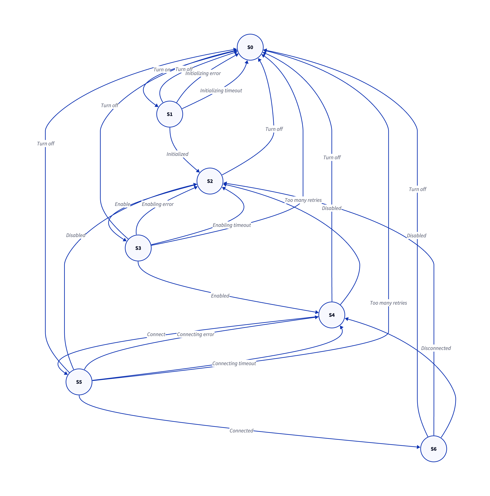

Network#
Network Module Design#
Overview#
The network module provides a unified framework for managing and utilizing multiple network interfaces, specifically Ethernet and Wi-Fi. It is designed to support scenarios where either one or both interfaces are used concurrently, ensuring flexibility, efficiency, and reliability.
Requirements#
Functional Requirements#
Interface Support:
Support both Ethernet and Wi-Fi interfaces.
Allow operation with either one or both interfaces.
Transition and Parallel Usage:
Enable parallel usage of both interfaces.
Support interface transitions (e.g., fallback from Ethernet to Wi-Fi).
Data Communication:
Provide TCP/UDP-based data transmission and reception.
Automatic Recovery:
Reconnect automatically in case of disconnection.
Non-Functional Requirements#
Modular Design:
Keep interfaces independent for better maintainability.
Scalability:
Ensure ease of adding new interfaces like LTE in the future.
Power Efficiency:
Minimize power consumption for embedded systems.
Real-Time Operation:
Ensure timely data handling for latency-sensitive applications.
Design Principles#
Abstraction:
Abstract interface details to allow the upper layers to function independently of the specific hardware interface.
Modularity:
Separate interface management (Ethernet, Wi-Fi) from protocol logic.
Flexible Interface Selection:
Allow users to explicitly choose interfaces or let the system select the most appropriate one.
Architecture#
Layered Structure#
Application Layer:
Provides APIs for data transmission and reception, hiding interface-specific details.
Network Manager Layer:
Handles interface selection, status monitoring, and fallback logic.
Interface Layer:
Includes drivers for Ethernet and Wi-Fi, exposing a unified interface for the network manager.
Hardware Layer:
Communicates directly with the underlying hardware (e.g., MCU peripherals).
Data Flow#
Transmission: Application → Network Manager → Selected Interface → Hardware
Reception: Hardware → Selected Interface → Network Manager → Application
Key Components#
network_manager:
Controls the overall network operations, including interface prioritization and transitions.
Manages interface health checks and recovery.
interface_driver:
Manages specific interfaces such as Ethernet and Wi-Fi.
Provides a unified API for initialization, data transfer, and status checks.
Examples: ethernet_driver, wifi_driver.
network_protocol:
Implements protocol logic such as TCP and UDP.
Interfaces with drivers for data transmission and reception.
connection_monitor:
Periodically checks interface connectivity.
Initiates reconnection attempts if necessary.
State Transition Diagram#
State Transition Table#
S0: Off
S1: Initializing
S2: Initialized or Disabled
S3: Enabling
S4: Enabled
S5: Connecting
S6: Connected
Current |
Event |
Next |
Note |
|---|---|---|---|
S0 |
Turn on |
S1 |
|
S1 |
Turn off |
S0 |
|
S1 |
Initializing error |
S0 |
|
S1 |
Initializing timeout |
S0 |
|
S1 |
Initialized |
S2 |
|
S2 |
Turn off |
S0 |
|
S2 |
Enable |
S3 |
|
S3 |
Turn off |
S0 |
|
S3 |
Enabling error |
S2 |
|
S3 |
Enabling timeout |
S2 |
|
S3 |
Too many retries |
S0 |
|
S3 |
Enabled |
S4 |
|
S4 |
Turn off |
S0 |
|
S4 |
Disabled |
S2 |
|
S4 |
Connect |
S5 |
|
S5 |
Turn off |
S0 |
|
S5 |
Disabled |
S2 |
|
S5 |
Connecting error |
S4 |
|
S5 |
Connecting timeout |
S4 |
|
S5 |
Disconnected |
S4 |
|
S5 |
Too many retries |
S0 |
|
S5 |
Connected |
S6 |
|
S6 |
Turn off |
S0 |
|
S6 |
Disabled |
S2 |
|
S6 |
Disconnected |
S4 |
APIs#
Initialization and Deinitialization#
netmgr_init(): Initializes the network manager.netmgr_deinit(): Deinitializes the network manager.netmgr_enable(): Enables the network manager.netmgr_disable(): Disables the network manager.
Interface Management#
netmgr_register_iface(): Registers a new interface with the network manager.
Data Transmission and Reception#
Server interface provided for data transmission and reception.
Status Monitoring#
netmgr_state(): Retrieves the current state of the network manager.netmgr_connected(): Checks if the network manager is connected.
Future Scalability#
Adding New Interfaces:
Introduce new drivers (e.g., LTE) with the same interface_driver structure and register them in the network manager.
Quality of Service (QoS):
Implement prioritization for critical data flows.
Load Balancing:
Optimize bandwidth by distributing traffic across multiple interfaces.